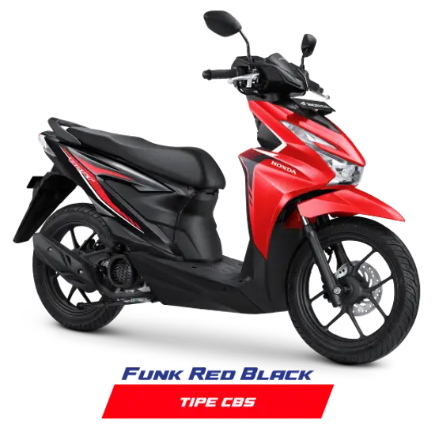

| Vario 160 | |
|---|---|

|
|
| Tipe Mesin | 4 Langkah, 4-Valve, eSP+ |
| Sistem Pendingin | Pendingin Cairan |
| Kapasitas Mesin | 156,9 cc |
| Kompresi | 12:1 |
| Tenaga | 11,3 kW (15,4 PS) / 8.500 rpm 13,8 Nm (1,4 kgf,m) / 7.000 rpm |
| Transmisi | Otomatis, V-Matic (Kering) |
| Oli | Basah, 0,8 liter |
| Beat | |
|---|---|
|  | |
| Tipe Mesin | 4 Langkah, SOHC, eSP |
| Sistem Pendingin | Pendingin Cairan |
| Kapasitas Mesin | 109,5cc |
| Kompresi | 10:1 |
| Tenaga | 6.6 kW (9.0 PS) / 7.500 rpm 9.2 N.m (0.94 kgf.m) / 6000 rpm |
| Transmisi | Otomatis, V-Matic (Kering) |
| Oli | Basah, 0,8 liter |
| Supra X | |
|---|---|

|
|
| Tipe Mesin | 4 4-Langkah, SOHC, Silinder Tunggal |
| Sistem Pendingin | Pendingin Udara |
| Kapasitas Mesin | 124,89 cc |
| Kompresi | 9,3:1 |
| Tenaga | 11,3 kW (15,4 PS) / 8.500 rpm 9,30 Nm (0,95 kgf.m) / 4.000 rpm |
| Transmisi | 4 Speed, Rotary Multiplate Wet Clutch with Coil Spring |
| Oli | Basah, 0,8 liter |